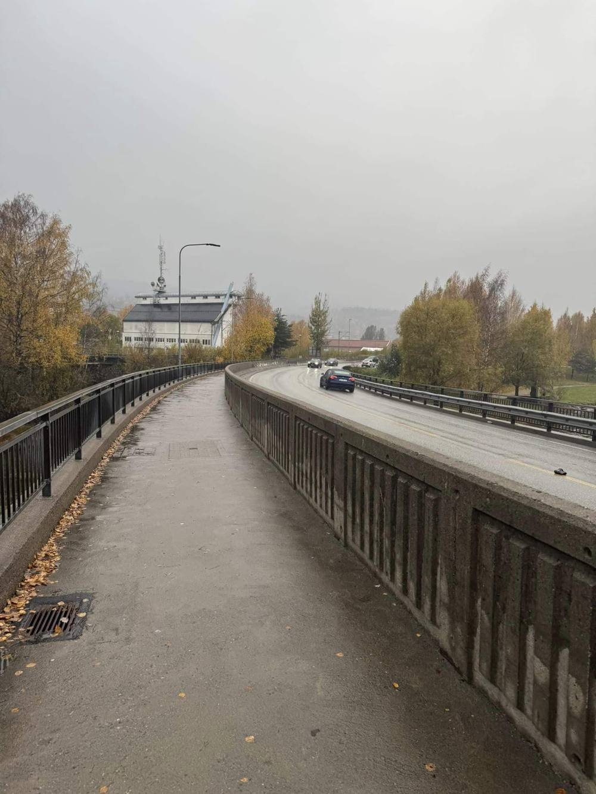
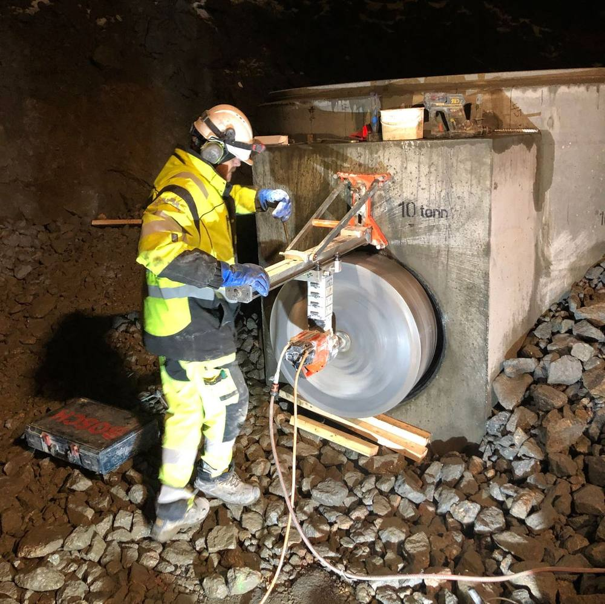
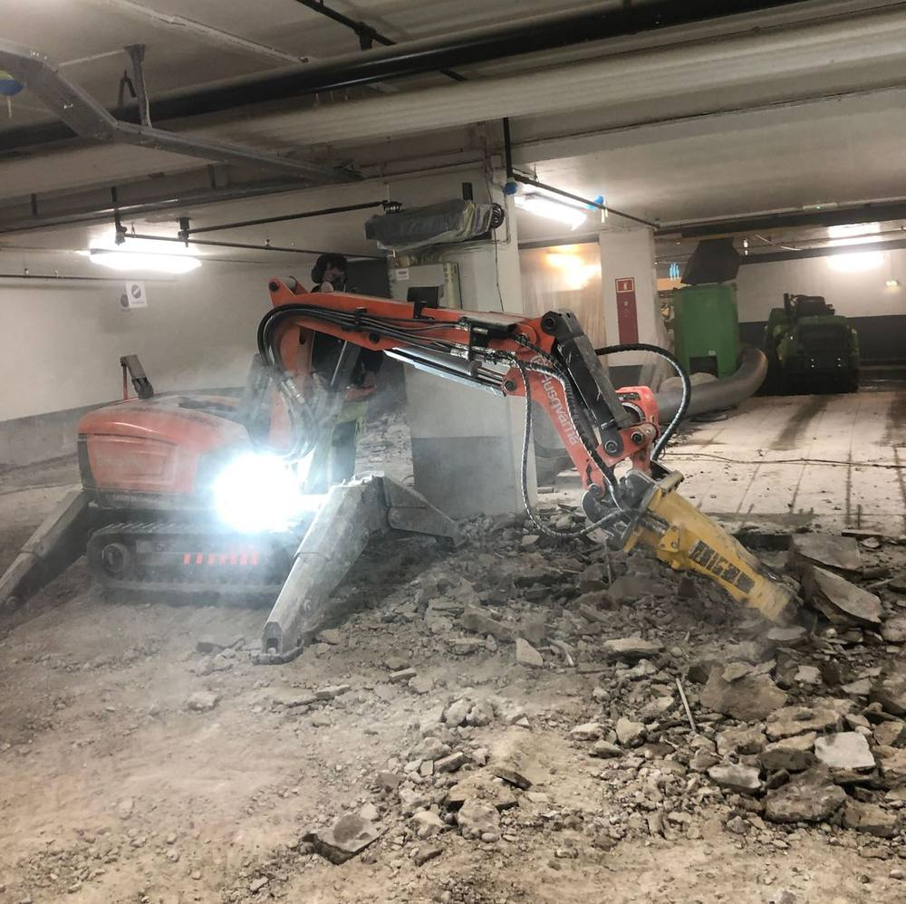
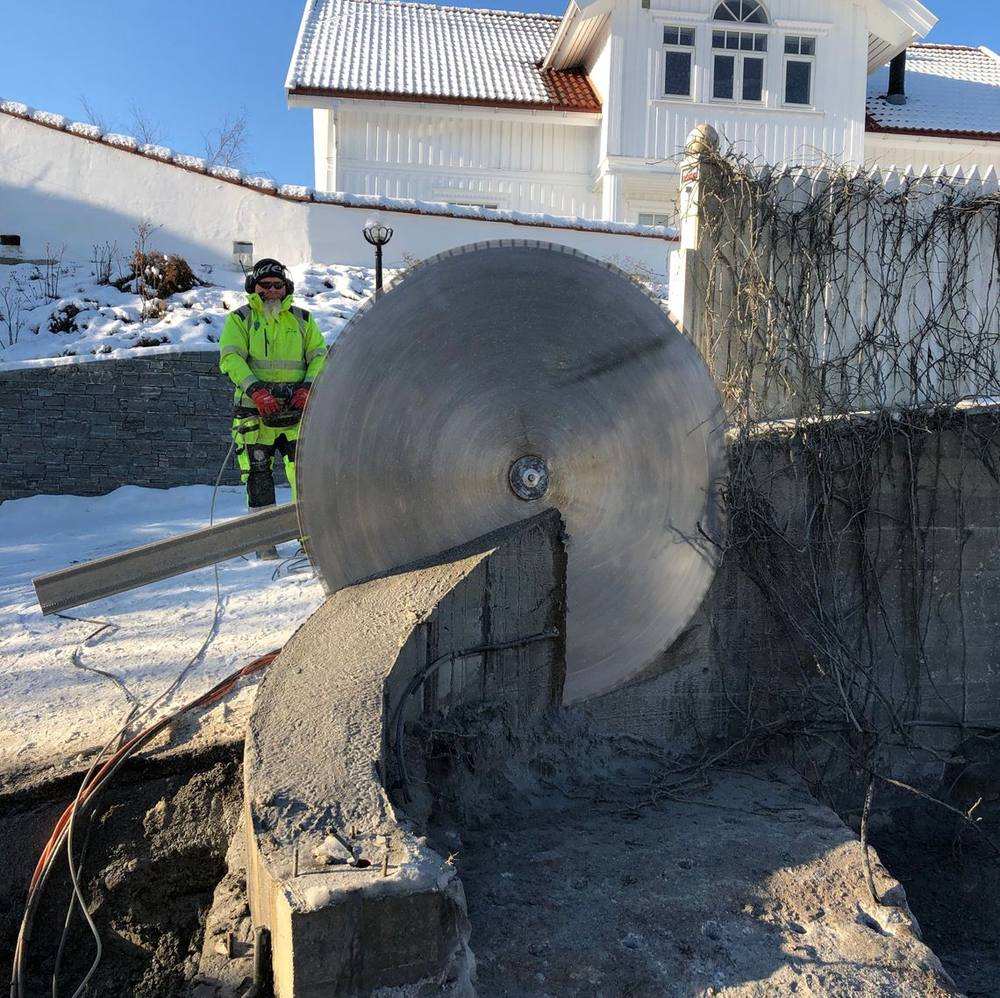
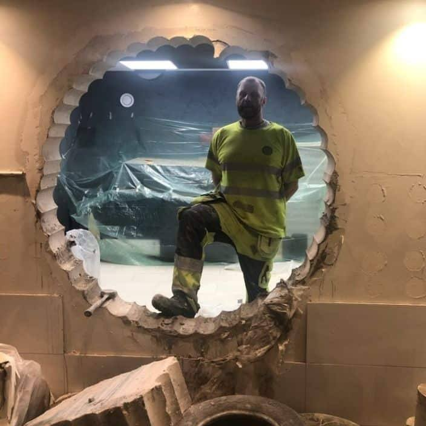
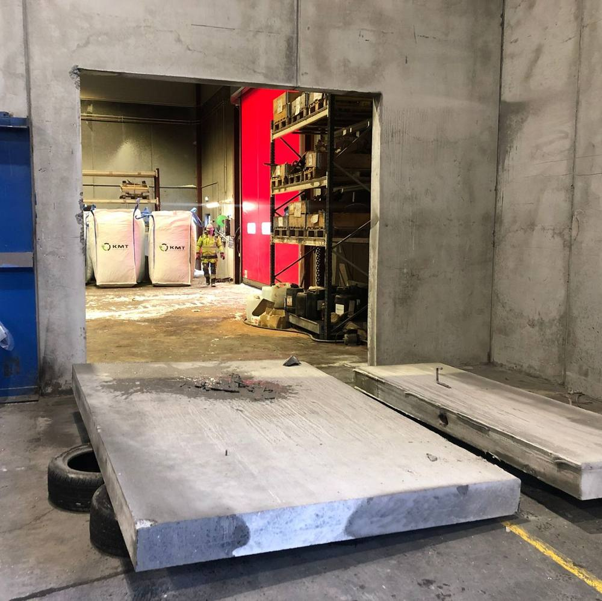
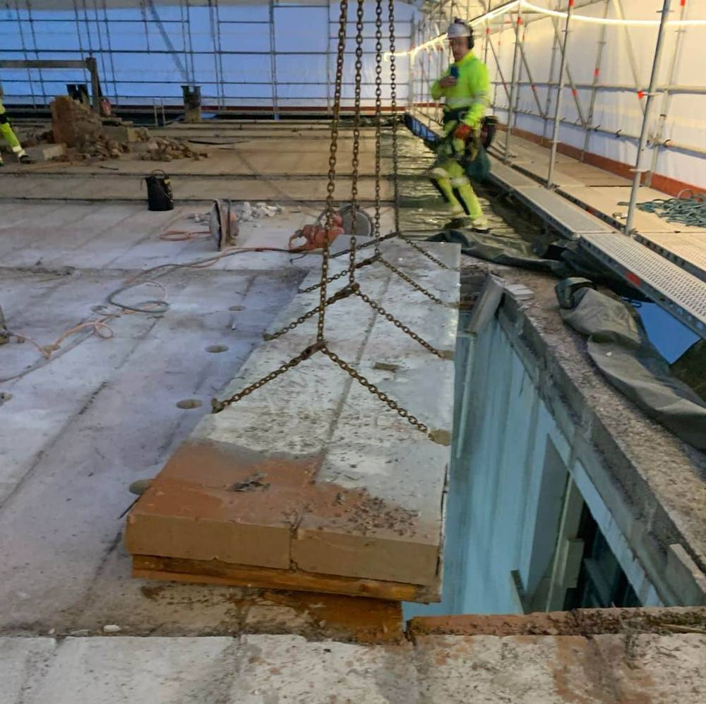

- Hjem
- Referanser
Referanser
Et utvalg av jobber vi har utført: bru for Garda Road Safety, høydebasseng for Norsk Betong, utskjæring for port hos KMT og riving på Gausetangen skole.

Garda Road Safety, byggherre Buskerud fylkeskommune
Nedre Eiker bru
Gutta har snudd døgnet, men holder humøret oppe og leverer strålende arbeid.

Norsk Betong AS
Husåsen høydebasseng
Boret alene veier rundt 200 kg, så her måtte det litt kraft til.

Pro-Co AS
Haakon VII gate
Her fikk vi i oppdrag å fjerne rundt 140 m² med knallhard betong.

Entreprenørfirma Haakon Skuggedal AS
Kiserødveien 62
Jostein og Roy skjærer av en forstøtningsmur. Det er godt å ha utstyret i orden når en slik jobb skal gjøres.

Privat kunde
Sømboring for rundt vindu
Anders sømborer åpning for et vindu på 1400 mm i diameter. En tidkrevende jobb, fordi det skal bores mange hull.

Kabel Metall & Trafo Gjenvinning AS
KMT – utskjæring for port
Roy og Jostein skjærer ut for en port. Kjekt når det er massive betonggulv under, og vi kan disponere tunge maskiner for å ta ned og fjerne betongen.

Holmestrand
Næskilds gate 2, Gausetangen skole
Fjerning av gammelt Siporex-dekke på taket til gamle Gausetangen skole i Holmestrand.
Neste steg
Har du en tilsvarende jobb?
Vi tar både små og store oppdrag. Send en kort beskrivelse, så ser vi på det.
Be om tilbud eller ring 90 05 02 81 i åpningstiden